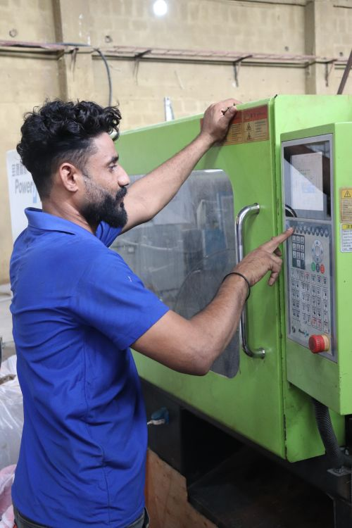

스마트공장 지원사업 2026 — 제조 소기업이 ‘중간1’부터 시작하는 순서

스마트공장 지원사업은 “로봇을 사주는 사업”이 아니라 공장 데이터를 모으고 그 데이터로 공정을 관리하는 시스템을 만드는 사업입니다. 그래서 신청에서 첫 단추는 예산이 아니라 현재 수준입니다. 정부 지원사업으로든 내 돈으로든 공장을 어느 정도 디지털화했는지가 정해져야 받을 수 있는 사업이 갈리기 때문입니다. 2026년 기준으로 정부형 스마트공장 구축사업은 고도화 목표 최대 2억 원·정부 지원비율 50% 이내(목표수준별 2회, 총 2.5억 원 한도)이고, 아무 이력 없는 제조 소기업이 처음 노리는 목표수준이 '중간1’입니다. 이 글은 1인·소규모 제조사업자 입장에서 현재 수준을 확인하는 방법부터 지원금을 안 쓰고도 받을 수 있는 수준확인, 신청 절차, 제외 사유, 탈락 후 재도전까지 순서대로 정리합니다.
30초 요약
| 항목 | 내용 |
|---|---|
| 무엇 | 제조현장에 솔루션·센서·제어기를 들여 생산 데이터를 수집·분석하는 스마트공장 구축을 정부가 일부 부담 |
| 누가 | 스마트공장 구축이 필요한 국내 중소·중견 제조기업 (중소기업기본법상 중소기업·중견기업특별법상 중견기업) |
| 2026 정부형 지원조건 | 고도화 최대 9개월·회당 최대 2억 원·지원비율 50% 이내·목표수준별 2회 총 2.5억 원 한도 (지원과제 265개 내외) |
| 동일수준 | 이미 고도화 지원을 받은 기업이 같은 수준 재구축 시 최대 6개월·0.5억 원, 목표수준별 1회 |
| 수준확인 | 자체비용으로 구축한 공장의 수준을 무료 확인 — 2026년 공고는 비용 전액지원, 예산 소진 시까지 수시 접수 |
| 접수 창구 | 스마트공장 사업관리시스템(smart-factory.kr) 온라인 접수. R&D 과제는 중기부 통합연구지원시스템(iris.go.kr) |
| 첫 단계 | 사업계획서가 아니라 현재 수준 파악 — 수준확인서가 있으면 그 자체가 신청 자격의 근거가 됨 |
1. 누가 신청할 수 있나 — '제조기업'과 '사업장 단위'
정부형 스마트공장 구축사업의 도입기업 자격은 국내 중소·중견 제조기업 중 스마트공장 구축이 필요한 기업입니다. 제조업이면 규모와 상관없이 문은 열려 있지만, 도소매·서비스업은 대상이 아닙니다. 신청 단위는 법인이 아니라 사업자번호로 구분되는 사업장입니다. 본점과 공장이 분리돼 있고 공장 쪽이 사업자단위과세 적용을 받는 종된 사업장이면, 그 공장 단위로는 별도 신청할 수 없습니다.
그리고 대부분 사람이 모르는 두 번째 문이 있습니다. 공급기업 Pool입니다. 스마트공장을 만들어주는 쪽(솔루션·SI 기업)이 되려면 사업관리시스템에 공급기업으로 등록해야 하고, 등록만 해두면 도입기업과 컨소시엄을 이루어 이 사업에 참여할 수 있습니다. 1인 개발자·솔루션 보유 사업자라면 도입기업 대신 이 창구가 실질적인 먹잇감입니다. 풀 등록은 상시 접수로, 신청 후 전담기관 승인까지 대략 3~7일 정도 잡습니다.
단, 솔루션 개발 인력과 역량을 자체 보유한 도입기업은 공급기업 없이 단독 신청도 가능합니다. 다만 단독 신청은 사업비 편성 시 현물인건비를 계상할 수 없다는 차이가 있습니다.
2. 지원 내용과 조건 — 2026년 수치
스마트공장 사업은 하나의 통으로 굴러가지 않습니다. 정부형(중기원)·대중소상생형(대기업 매칭)·부처협업형·디지털협업공장·자율형공장·제조AI특화·자동화(제조로봇)·수준확인 등으로 나뉘어 각각 공고가 뜨고, 사업별로 지원비율과 한도가 다릅니다. 2026년 스마트 제조혁신 지원사업은 이런 세부사업들을 통합 공고로 묶어 사전 안내하며, 세부사업별로 총사업비의 30~100% 범위에서 정부 지원이 들어갑니다. 그중 1인·소기업이 가장 많이 지원하는 두 갈래의 2026년 조건은 다음과 같습니다.
| 세부사업 | 지원기간 | 정부 지원한도 | 지원비율 |
|---|---|---|---|
| 정부형 스마트공장 (고도화) | 최대 9개월 | 회당 최대 2억 원 (수준별 2회·총 2.5억 원) | 50% 이내 |
| 정부형 스마트공장 (동일수준) | 최대 6개월 | 최대 0.5억 원 | 50% 이내 |
| 제조AI특화 (AI공장) | 최대 9개월 | 최대 2억 원 (데이터 수집·검증은 최대 6개월·0.5억 원) | 공고문 기준 |
| 제조로봇 도입 | 최대 8개월 | 2.5억 원 | 50% 이내 |
| 스마트공장 수준확인 | 수시 | 확인비용 전액지원 | — |
핵심은 ‘50% 이내’라는 표현입니다. 2억 원을 무조건 받는 게 아니라 내가 4억 원을 쓰면 절반을 지원한다는 뜻이고, 실제로 1인 제조사업자가 받는 규모는 대개 그보다 작습니다. 대신 지원금 규모 자체보다 자부담 설계가 평가를 받습니다. 기술성 평가 배점 안에 '도입기업의 자부담 비율 등을 통해 고도화 의지를 충분히 제시했는가'(10점)가 들어 있습니다.
또 하나, 2026년부터는 같은 성격의 구축사업을 겹으로 하는 것이 금지됩니다. 정부형·자율형·대중소상생형(일반형)·부처협업형·디지털협업공장·수준확인 등은 서로 동시 수행이 안 되고, 제조AI특화와 제조혁신자동화만 구축사업 하나와 병행이 허용됩니다. 이미 진행 중인 사업이 있으면 신규 신청 자체가 걸립니다.
3. 지원 제외 — 여기 해당하면 서류를 낼 필요도 없다
| 제외 사유 | 비고 |
|---|---|
| 휴·폐업 중인 기업 | 사업자 상태 확인으로 자동 걸러짐 |
| 국세·지방세 체납 | 완납증명서 제출 단계에서 노출 |
| 유흥·향락업, 숙박·음식점업 | 업종 자체 제외 |
| 불건전 오락용품 제조업 | 업종 자체 제외 |
| 동일·유사 사업계획서로 이미 정부 지원을 받은 경우 | 중복 수혜 차단 |
| 스마트공장 구축지원사업 수행 중인 기업 | 동시 수행 제한사업 목록 기준 |
| 스마트제조혁신 지원사업 참여제한 중인 기업 | 부정처분 이력 |
제외 사유는 신청 때만 본다음 통과되는 게 아닙니다. 선정평가·협약 체결 등 절차가 진행된 뒤에도 사유가 확인되면 평가 제외와 협약 해약까지 가능합니다. 체납은 신청 전날에 생긴 것도 걸리므로, 사업계획서 쓰기 전에 사업자 상태부터 확인하는 편이 안전합니다.
4. 서류 — 사업계획서가 평가와의 100점 싸움
스마트공장 구축사업의 승부는 사업계획서 한 장에서 납니다. 접수는 사업관리시스템 온라인이고, 기본적으로 사업신청서·자가진단표·정보활용동의서, 그리고 사업자등록증명과 국세·지방세 완납증명(3개월 이내 발행본)을 올립니다. 사업계획서의 평가 구조를 알면 쓰는 순서가 바뀝니다.
| 단계 | 배점 구조 (2026 정부형) |
|---|---|
| 서면 평가 | 구축 필요성 30점 (데이터 적용 공정 보유·활용도 각 15) · 지원 적정성 35점 (목적 부합 15·현행업무 분석 10·지능형공장 목표 10) · 공급기업 역량 15점 · 도입기업 역량 20점 정량 (매출액 증가율·영업이익 증가율·부채비율 각 5, 수출실적 5) |
| 기술성 평가 (대면) | 도입·공급기업 역량 35점 · 구축 목표 설정 타당성 20점 · 구축 내용 적절성 20점 · 목표달성 가능성 25점 · 가점 5점 (합계 100) |
정량 20점은 피할 수 없습니다. 매출액 증가율 12% 이상이 5점, 3% 미만이 1점입니다. 다만 2026년 1월 1일 이후 창업한 기업에는 매출액 증가율 3점·영업이익 증가율 3점·부채비율 3점을 기본으로 부여하는 배려가 있습니다. 재무제표가 얇은 1인 제조사업자에게는 고정 배점이나 다름없으니 이 조항을 기준으로 전략을 세우세요.
가점은 5점까지 인정되는데, 항목은 스마트공장 솔루션 가동·인증서(KACAS·KACI) 류로 공고문에 정리돼 있습니다. 솔루션을 이미 써보고 있다면 증빙 하나만으로도 기술성에서 갈립니다.
5. 신청 순서 — 수준확인부터 시작하는 게 정답인 이유
- 현재 수준 확인 — 정부 지원 이력이 없이 내 돈으로 시스템(ERP·생산관리 등)을 돌리고 있는 기업은 2026년 스마트공장 수준확인 사업을 쓰세요. 확인비용 전액 지원, 2026년 1월 30일부터 예산 소진 시까지 수시 접수, 확인기관은 스마트제조혁신협회·대한상공회의소 중 택1. 수준확인서와 진단보고서가 나옵니다.
- 사업장 상태 정리 — 사업자등록증명, 국세·지방세 완납증명 3개월 이내 발행본. 휴·폐업·체납이 없는지 먼저 확인 (사업자등록 상태 조회로 걸러도 됩니다).
- 스마트공장 사업관리시스템(smart-factory.kr) 회원가입 — 기업회원(대표자)과 참여인력 개인회원 모두 가입, 소속직원 승인까지 받아야 접수가 열립니다.
- 공급기업 정하기 — 공급기업 Pool 등록 기업 중에서솔루션을 함께할 곳을 고릅니다. 사업관리시스템 내 풀에서 탐색하고, 컨소시엄 형태로 사업계획서를 씁니다. SaaS형 솔루션 도입은 우대됩니다.
- 사업계획서 작성·접수 — 목표수준(KS X 9001 기준 중간1 이상), 데이터 집계 포인트(공정별 수집 데이터 종류와 집계방법), 솔루션 기능 구성도, 성과지표(기존수치→목표수치, 기대효과 금액)를 채웁니다. 자체 작성도 가능하지만 선정되면 중간점검 전까지 제조DX멘토단 컨설팅 4회를 필수로 받아야 합니다(기업 자부담 21만 원, VAT 미포함).
- 서면 평가 → 기술성(대면) 평가 → 협약 → 구축 — 단계별 일정과 결과는 지역 테크노파크 제조혁신센터가 안내합니다.
- 완료 — 정산 시 회계정산 수수료, 교육비(100만 원), 기술임치비(45만 원)가 사업비에 필수 편성되고, 결과물은 2년 이상 기술임치 의무가 따라옵니다.
6. 탈락했거나 자격이 안 될 때
세 갈래 대안이 있습니다.
- 아직 수준이 애매하다 → 수준확인으로 수준확인서를 받아두세요. 이 확인서는 사업 신청 자격의 근거가 되고, 자체비용으로 구축한 공장이 있으면 같은 수준이어도 '고도화'로 신청할 수 있게 해줍니다.
- 2억 원 규모가 부담 → 2026년 스마트 제조혁신 통합 공고 안에 자동화·수준확인·클라우드 제조솔루션·공급기업 역량진단 같은 작은 단위 세부사업들이 있습니다. 소공인은 소공인 스마트제조지원(스마트공방), 지역 소재 기업은 경북형 기초단계류(60% 지원·최대 6,000만 원) 같은 시도 매칭 사업이 창구가 따로 있습니다.
- 공고 시점을 놓쳤다 → 정부형은 연초 통합 공고, 세부사업은 수시 추가 모집이 뜹니다. 2026년에도 CBAM 대응 3차·스마트공장 공급기업 역량진단 2차(09-29 마감)처럼 하반기 추가 공고가 계속 나왔습니다. 나라장터에서 기관이 발주하는 '스마트생태공장 구축사업' 설비 구매 공고(예: 신일글로벌 자동 세정기 2억 6,994만 원, 09-28 마감)는 받는 쪽이 아니라 파는 쪽 기회입니다 — 공급기업 Pool과 함께 노리면 됩니다.
그리고 이 사업은 자금과 판로가 별개로 굴러갑니다. 스마트공장 구축이 끝난 공장이 공공기관에 물건을 파는 판은 따로 열려 있으니, 판로 쪽은 조달가이드 편을 함께 보세요.
바로 가기
- 스마트공장 사업관리시스템 (구축사업 접수·수준확인·공급기업 Pool)
- 2026년 스마트 제조혁신 지원사업 통합 공고 (기업마당)
- 2027년 스마트공장 구축지원사업 주관기관 모집 공고 (중기부, 10-13까지)
같이 읽기
- 공고문 읽는 법 — 조달가이드 1호: 나라장터 공고 첫눈에 보는 법
- 우리 제품이 몇 원짜리 판에 끼는지 — 금액별 참가자격·계약방식
- 사업자 상태·체납부터 확인 — 사업자상태 조회 도구
- 공장 운영에 필요한 자금 — 소상공인 정책자금 2026 총정리